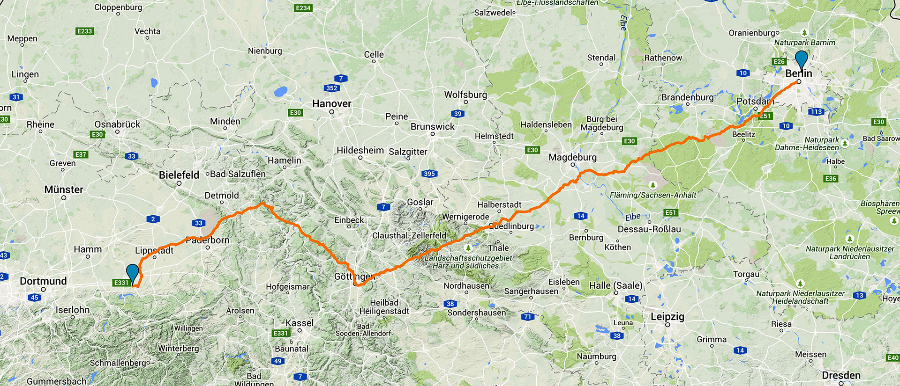

Antons Reise
Ein Roadtrip für
die
Freiheit
Datum:
25.7.
letztes großes Erlebnis:
Bauer Jakob getroffen
Wetter heute:
Regen und Sturm, ächz.
gefahrene Kilometer:
124 km
Wo sind wir gerade:
Ratsiek im Weserbergland
Dieselverbrauch:
68 Liter
Home
About
Contact
Contact
Contact
Contact
